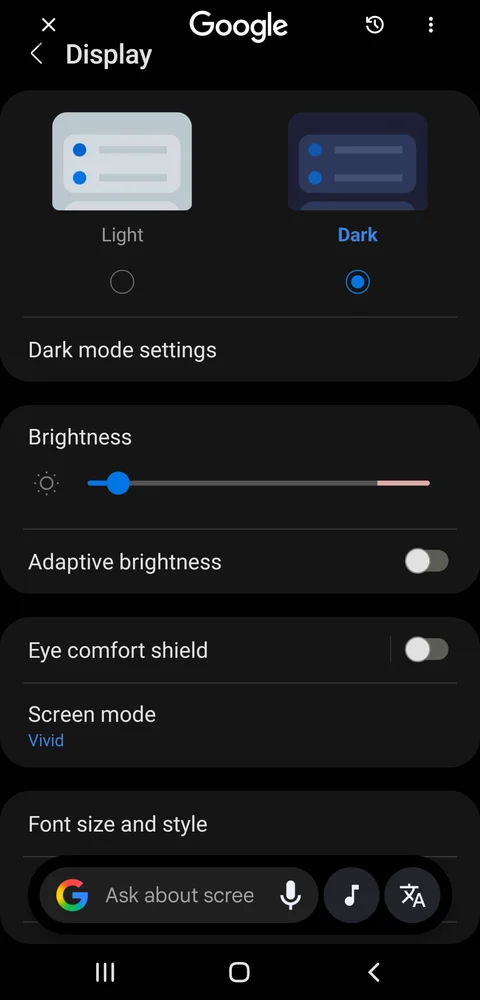

Search the screen you’re on
The Google app supplies the genuine selection overlay and search results. RealCTS handles the shortcut, with no advertising or account requirement.
Open-source Android application with rootless native Circle to Search trigger options for compatible devices.
v1.3 · Android 9+ to install · View on GitHub

The assistant panel may appear briefly. Circle an item or tap text on the original screen, then press Back to return. The gesture must be assigned to the assistant on your phone.
The Google app supplies the genuine selection overlay and search results. RealCTS handles the shortcut, with no advertising or account requirement.
Use Automatic mode for the no-PC setup. It checks the firmware helper, Search screen action and active Google voice service.
On compatible phones, hold Home to invoke the assistant-panel trigger or use the Quick Settings tile. Advanced users can configure voice-service switching (VIS) or optional LSPosed integration.
Start with the dashboard test. It tells you whether native search can open before you change a gesture.
Full setup and advanced modes ↗Android 9 is the installation minimum. Native search also depends on the firmware, launcher and Google app. RealCTS 1.3 has these recorded device results.
| Device | Observed result |
|---|---|
| Galaxy M21 SM-M215F · Android 12 · One UI 4.1 | ASSIST key and a one-second on-screen Home hold opened the overlay. Tapping “Display” offered Copy and Translate. Back returned to Settings. |
| Vivo V2437 Android 16 | The standard ASSIST key opened the overlay over Display settings. A physical Home hold and a spoken hotword remain unverified. |
A free Android shortcut app that requests Google’s native Circle to Search over your current screen.
Try Automatic mode with Google selected as your default assistant and run the dashboard test. A phone without an official shortcut may still expose a native trigger. RealCTS cannot supply a missing Google feature or system service.
The recommended assistant-panel setup works without root on compatible phones. The optional LSPosed integration needs a compatible rooted environment.
Yes. Automatic mode uses on-device routes. The optional temporary voice-service switching setup requires an ADB secure-settings grant.
The Galaxy M21 and Vivo V2437 have verified results above. Motorola devices and other models need their own tests.
Follow the setup steps, open another app and hold the on-screen Home button in three-button navigation. Gesture navigation and reserved Home actions vary by phone.
Yes. RealCTS is licensed under GPL-3.0-only. It has no advertising or RealCTS account requirement.
The dashboard can show an unavailable candidate route. Check Diagnostics and the setup guide. A request accepted by Android still needs visual confirmation in Google’s overlay.
RealCTS has no internet permission. In assistant-panel mode its accessibility service watches Google window-state changes to recognize the supported panel. It does not read window contents or record audio. Diagnostics stay on the device. Google handles selections and search under its own settings.
Optional permissions and recovery ↗